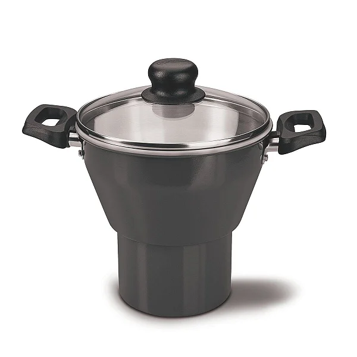

Cuscuz is a traditional northeastern brazilian dish, which at its core is a simple steamed cake made from hydrated corn flakes (flocão) resulting in a uniquely fluffy, moist and crumbly texture. When cooked correctly in a specialized steamer called a cuscuzeira, it emerges piping hot, fragrant, and ready to absorb whatever savory or sweet topping you pair with it. It is the quintessential breakfast, but substantial enough for dinner, acting as a versatile canvas for the region's bold flavors.
The origins of this dish are a fascinating culinary intersection. It traces back to the Berbers of North Africa (who brought the steaming technique to Portugal), but upon arriving in Brazil, colonizers adapted the method to the abundant native ingredient: corn. It became a staple food due to its low cost, high energy, and ease of preparation. Today in places like Pernambuco, the smell of cuscuz steaming is the universal alarm clock. It is democratic and beloved, eaten by everyone from the humblest worker to the wealthiest landowner, often served simply with a generous pat of butter melting into its yellow crevices, or dressed up with the sun-dried beef and cheese.
Cuscuzeira the specific steaming pot shaped like an hourglass (image below) is needed if you want to make the dish the traditional way. If you don't have one, you can improvise with a steamer basket and a pot, but the cuscuzeira is the standard.
